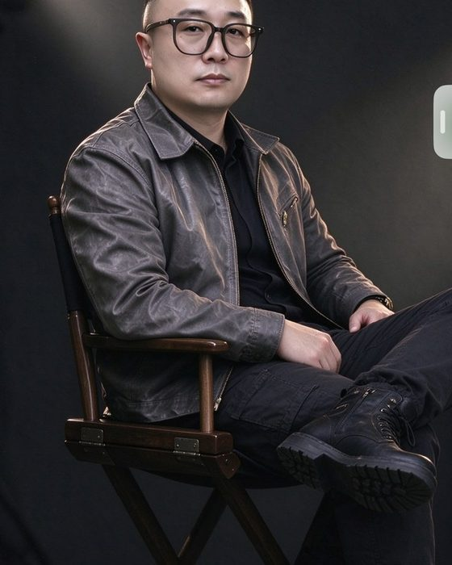

01 · CULTURE & TOURISM
实体文旅规划与落地
城乡规划与景观文旅方向，主导参与旅游度假区、遗址公园、校园、城市口袋公园、市政道路提升、河道滨水整治、美丽乡村、主题夜游小镇等公建类项目。
策划 → 设计 → 落地管控
实战型商业操盘人 · AI 商业讲师
IP 与海外短剧全流程策划 · 18 年一线操盘经验

从实体空间到数字 IP，把创意构想落成可交付的项目。
戴思阳，实战型商业操盘人、AI 商业讲师，拥有 18 年一线项目操盘实战经验，先后担任技术合伙人、联合创始人，横跨城乡规划文旅、数字游戏文创、AIGC 文创多大赛道，打通实体空间项目与数字 IP 内容的落地方法论。
实体文旅规划阶段：早期深耕城乡规划与景观文旅行业，主导参与大量公建类项目，涵盖旅游度假区、遗址公园、校园、城市口袋公园、市政道路提升、河道滨水整治、美丽乡村、主题夜游小镇等；完整经历从前期策划、方案设计、多方甲方政府协调到现场落地管控全流程，擅长平衡创意构想与现实落地条件。
数字游戏文创创业阶段：作为联合创始人主导游戏项目从零到一完整搭建，独立搭建游戏世界观、角色人设与闭环剧情 IP 体系；负责核心玩法与经济数值系统设计，统筹 UI 视觉、版本迭代与跨团队资源协同，并独立操盘游戏新品线下发布会全案。
AIGC 商业应用与讲师业务：深度实战 AIGC 创意工具矩阵，熟练运用 Midjourney、Niji、Scenario、Runway、Suno 等工具；主攻企业实战型 AI 商业落地、海外 AI 短剧 IP 策划与全流程剧本创作。
城乡规划与景观文旅方向，主导参与旅游度假区、遗址公园、校园、城市口袋公园、市政道路提升、河道滨水整治、美丽乡村、主题夜游小镇等公建类项目。
作为联合创始人主导游戏项目从零到一搭建，独立搭建世界观、角色人设与闭环剧情 IP 体系，负责核心玩法与经济数值系统设计。
深度实战 AIGC 创意工具矩阵，运用 Scenario 批量生产风格统一的游戏原画、角色、道具与场景资产，快速产出剧本、配乐、创意短片与品牌视觉资料。
主攻海外 AI 短剧 IP 策划与全流程剧本创作，能够根据企业真实需求输出产品定位落地方案。
横跨城乡规划文旅、数字游戏文创、AIGC 文创多大赛道，具备完整的项目全周期操盘经验。
先后担任技术合伙人与联合创始人，兼具技术视角与商业经营视角。
完整经历前期策划、方案设计、多方甲方政府协调到现场落地管控全流程。
统筹 UI 视觉、版本迭代与跨团队资源协同，独立操盘游戏新品线下发布会全案。
熟练运用 Midjourney、Niji、Scenario、Runway、Suno 等工具，覆盖图像、视频、音乐等创作环节。
具备成熟的企业宣讲与课程交付经验，面向企业开展 AI 商业落地培训。
授课摒弃空泛理论，全部基于跨行业项目案例拆解，输出可直接复用的实战方法。
课程内容全部来自文旅、游戏、AIGC 等跨行业真实项目，拆解决策过程与落地细节。
不讲无法落地的概念，聚焦能直接用于业务的工具、流程与方法。
把项目中的经验提炼成可复用的方法与模板，学员回到岗位即可套用。
根据企业真实需求，输出产品定位与落地方案，让培训对齐业务目标。
主导参与大量公建类项目，完整经历从前期策划、方案设计、多方甲方政府协调到现场落地管控全流程，擅长平衡创意构想与现实落地条件。
作为联合创始人主导游戏项目从零到一完整搭建，独立搭建世界观、角色人设与闭环剧情 IP 体系，负责核心玩法与经济数值系统设计。
独立操盘游戏新品线下发布会全案策划执行，包含流程编排、角色扮演沉浸式展演、宣发与现场管控，打通线上内容创作与线下品牌活动的完整闭环。
主攻海外 AI 短剧 IP 策划与全流程剧本创作，能够根据企业真实需求输出产品定位落地方案。